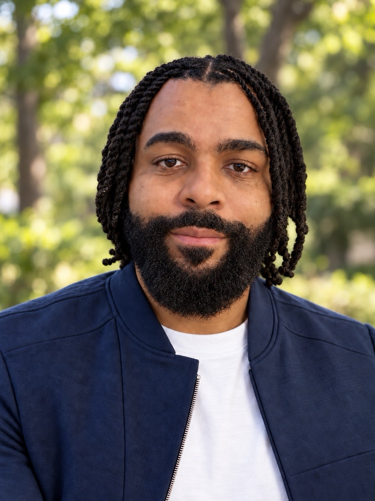

A platform with a shared foundation.
Built landing-zone networking and private DNS, managed firewall egress, and helped establish naming, tagging, and access standards.
A foundation the team can operate and extend.
My background connects infrastructure, identity, client consulting, and Azure delivery.
In my current role, I bring those perspectives together to build reliable platforms, improve deployment practices, and help developers and engineers move work forward.

In my current role, I work alongside cloud engineers and developers to make Azure a stronger foundation for the business.
Built landing-zone networking and private DNS, managed firewall egress, and helped establish naming, tagging, and access standards.
A foundation the team can operate and extend.
Wrote Bicep templates and GitHub workflows so changes could be reviewed and deployed consistently.
Less manual configuration. More reviewable changes.
Partnered on application and database deployments, tying network and access decisions to workload needs.
Greater developer confidence in Azure.
Miles IT
Azure solutions designed and modernized for more than 100 clients, shaped around business needs and client feedback.
Douglas County Government IT
A cloud migration that reduced operating expenses by 20%, plus troubleshooting, workflow improvements, and training that reduced Tier 2 escalations by more than 25%.
Support taught me where technical decisions create friction. Infrastructure work showed me how identity, networking, security, and operations depend on one another. Consulting taught me to listen and explain tradeoffs.
That perspective helps me connect business goals, developer workflows, and platform decisions—and support the people carrying the work forward.
Background & approach →Understand the goal and constraints.
Explain choices so people can decide together.
Mentor teammates and share the context.
Connect about Azure engineering, cloud architecture, and helping teams do their best work.